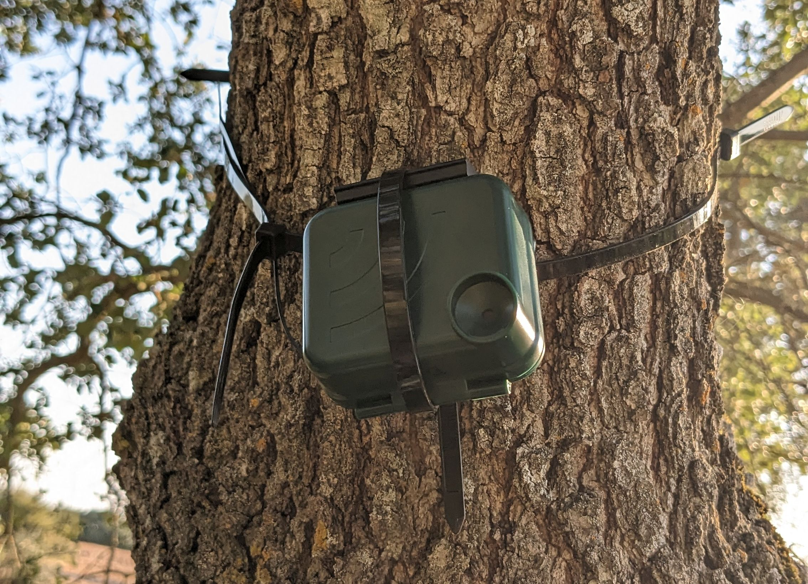
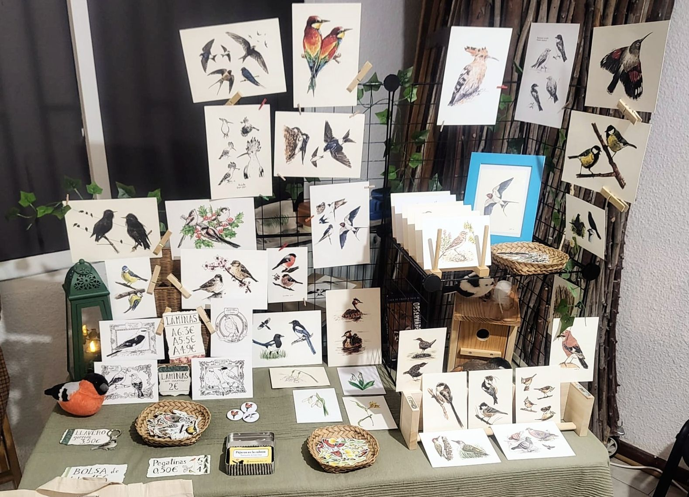
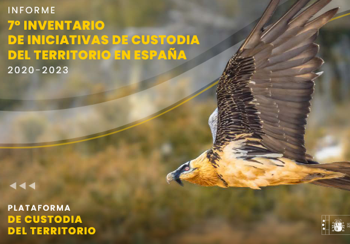
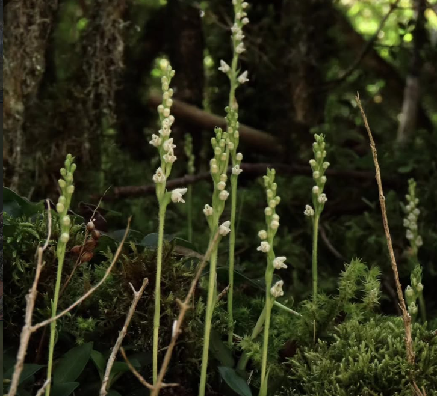

Ongoing

NOCTUA+
Passive accoustic monitoring to complement the voluntary monitoring program of nocturnal birds by the Spanish Society of Ornithology. As member of the Ecoacoustics Group in Universidad Autónoma de Madrid.

Illustration
Nature illustration, mainly birds and plants with watercolor and colorpencils.
Past

Land stewardship inventory
Inventory of land stewardship initiatives in Spain. As part of the Land Stewardship Platform, from the Biodiversity Foundation of the Environmental Ministry of Spain.

Goodyera repens in a forest in Huesca (Spain). Several floral stems appear in the front with small green flowers, with moss and branches in the background.'>Master's thesis
Study of the effect of clearcuts in a forest orchid (Goodyera repens), using citizen science data and a GIS analysis.

Bachelor's thesis
Study of the wintering bird communities in cattle roads in the region of Madrid (Spain).